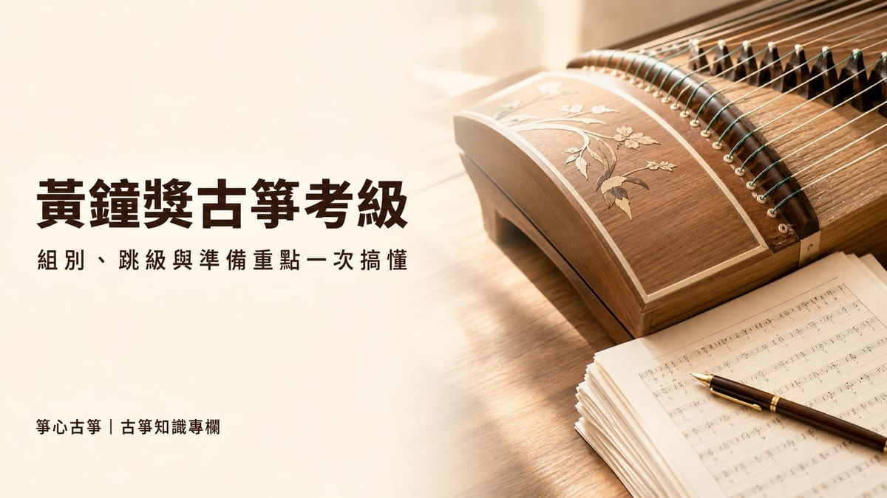
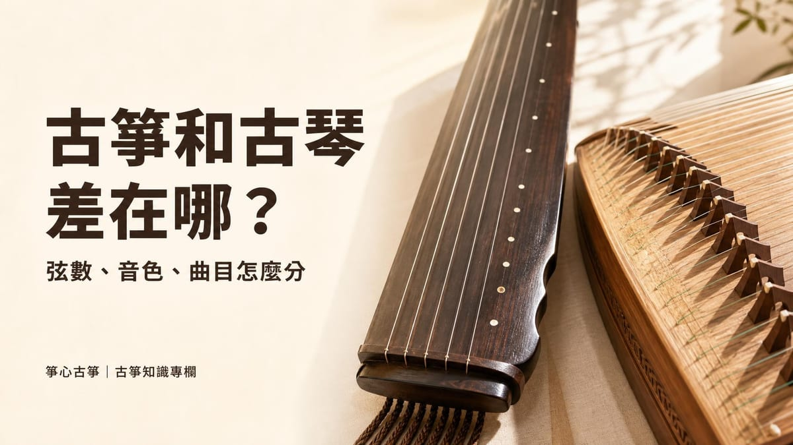

考級比賽
黃鐘獎國樂考級：古箏各級曲目與準備重點
黃鐘獎古箏考級的曲目表會隨簡章版本修訂，網路上的舊清單不一定適用。本篇整理黃鐘（全國音樂檢定考級）的甲乙組差異、跳級與轉⋯

古箏和古琴是兩種完全不同的樂器，雖然名字只差一個字，外型、構造、音色與彈奏方式卻相差很大。最直接的分辨方式：古琴只有 7 根弦、沒有琴碼，彈奏時靠手指按壓琴面上的「徽」取音；古箏最常見的是 21 弦，每根弦下方都有一個可移動的琴碼（雁柱），透過調整琴碼位置來定音。兩者雖然都是中國傳統彈撥樂器，歷史脈絡、演奏技法與適合初學者的難度也各不相同。
以下就從外型構造、音色與彈法、記譜方式、歷史文化地位與代表曲目這幾個面向，把兩種樂器的差異整理清楚。
古琴現代標準為七弦（最早為五弦，後增為七弦），琴身長約 122 到 125 公分，沒有可移動的琴碼，琴面上嵌有 13 個圓點「徽」，用來標示泛音與按音的位置。古箏則以 21 弦最常見，另外也有 16、18、26 弦等規格（最早只有 12 弦，唐宋時期增加到 13 弦）；每根弦下方都有一個稱為「雁柱」的琴碼，移動琴碼就能調整音高。
| 項目 | 古琴 | 古箏 |
|---|---|---|
| 弦數 | 現代標準 7 弦（最早 5 弦，後增為 7 弦） | 最常見 21 弦（早期 12 弦，唐宋增至 13 弦） |
| 琴碼 | 無琴碼，靠琴面上 13 個「徽」標示按音位置 | 每弦下方有可移動的「雁柱」（琴碼），移動琴碼可調整音高 |
| 體積 | 琴身長約 122–125 公分，體積較小 | 弦數較多，體積較大 |
| 演奏義甲 | 右手留指甲、左手不留指甲，以真甲彈奏 | 普遍配戴義甲，以膠布纏繞固定於指尖 |
簡單來說，看到樂器上有一整排可以左右移動的琴碼，就是古箏；沒有琴碼、琴面上有一排圓點裝飾的，就是古琴。
兩種樂器的音色與彈奏邏輯也不一樣。古箏普遍配戴義甲撥弦，音色明亮清脆，聽起來活潑奔放；古琴以指腹搭配留長修剪過的指甲直接觸弦，音色深沉悠遠，講究內斂含蓄的表現方式。
古箏的基本指法包含托、劈、挑、抹、剔、勾、摘、打：右手在琴碼右側撥弦取音，左手在琴碼左側按弦做出按音、滑音、顫音等變化，可參考本站的基礎指法介紹。古琴的基本指法則有擘、抹、勾、打、托、挑、剔、摘共 8 種，加上左右手配合可組合出數十種複雜指法；彈奏時要同時控制按弦的徽位（音準）與力道（韻味），對初學者來說入門門檻相對較高。
古箏教材普遍使用簡譜（以數字 1 到 7 代表音高），搭配已經定好音的五聲音階，初學者不需要先學五線譜就能開始練習，入門相對容易；可參考本站古箏是什麼：歷史、構造、調弦與流派一文。
古琴則使用自唐代流傳下來的減字譜，把指法、弦序與徽位濃縮成一個方塊字，記錄的是「怎麼彈」而不是精確的節奏與音高，初學者通常需要另外跟老師口傳學習每首曲子的節奏與速度，學習曲線相對陡峭。也因為減字譜不記錄節奏的特性，同一首琴曲常會因為老師或流派不同而有不同的詮釋版本，這個重新詮釋古譜的過程稱為「打譜」。
古琴是中國歷史最悠久的彈撥樂器之一，被視為「琴棋書畫」四藝之首，自古是文人修身養性的象徵，有「士無故不撤琴瑟」的說法。2003 年，古琴被聯合國教科文組織列入人類非物質文化遺產代表作；1977 年，管平湖演奏的古琴曲《流水》更被美國航太總署選入航海家號太空船的金唱片，作為向外太空介紹地球文化的素材之一。
古箏的歷史同樣悠久，春秋時期的秦國已有相關記載，因此也被稱為「秦箏」；唐朝初年（7 世紀）的文獻中也已出現古箏類彈撥樂器的記載。相較於古琴偏向文人雅士的小眾傳承，古箏在現代的入門門檻較低、普及程度更高，是目前古箏教室與音樂班最常見的中國彈撥樂器之一。
想進一步了解古箏考級曲目的，也可以參考本站另一篇黃鐘獎國樂考級：古箏各級曲目與準備重點。
如果想要比較快上手、能彈流行歌或影視配樂改編曲目，古箏會是比較容易入門的選擇：21 弦古箏通常依 D 大調五聲音階定弦，搭配簡譜就能開始練習，坊間古箏教室與考級資源也比較豐富。如果對文人音樂、追求含蓄內斂的音樂表現更有興趣，而且不介意較長的學習曲線，古琴會是更貼近傳統文人精神的選擇。
兩種樂器沒有絕對的優劣，比較適合依照自己喜歡的曲風、能投入的練習時間，以及身邊是否方便找到老師來決定。如果你想先實際體驗古箏的手感與音色，新莊箏心古箏音樂教室提供 $350 體驗課，由老師一對一帶你認識古箏構造與基本指法，再決定要不要繼續學習；也可以參考如何選擇古箏老師一文，了解挑選教室時可以注意的重點。
就入門難度來說，古箏通常比較容易上手：21 弦古箏依五聲音階定弦，搭配簡譜就能開始練習；古琴需要讀減字譜並同時控制徽位與按弦力道，學習曲線較陡峭。但兩者都需要長期練習才能彈得細膩。
兩者指法與記譜系統不同，不能直接互通，但已經具備基本樂理與節奏感的學習者，轉學另一種樂器通常會比完全零基礎更快進入狀況。
古箏音色明亮清脆，需要較硬的接觸面撥弦才能發出清楚的聲音，因此普遍配戴義甲；古琴講究以指腹與修剪過的指甲直接觸弦，表現深沉內斂的音色，所以不戴義甲。
古箏本身就有 16、18、21、26 弦等不同規格，會因音域與編曲需求而不同；古琴的弦數則是固定的 7 弦（古時曾有 5 弦），現代古琴皆以 7 弦為標準。
不一樣，兩種樂器分屬不同的考級系統與曲目庫。古箏考級可參考本站的 /Certificates/ 考級與比賽時程，以及〈黃鐘獎國樂考級〉一文的整理。
新莊箏心古箏音樂教室提供 $350 體驗課，由老師一對一帶你認識古箏、彈出第一段旋律。
本教室位於新北市新莊區（鄰近新莊體育場、新泰國中），採預約制，為確保上課品質平日不開放參觀；預約成功後將提供詳細交通資訊。